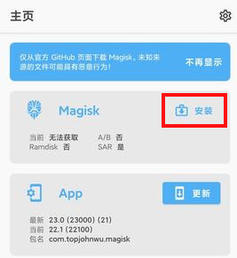
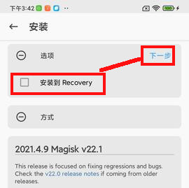
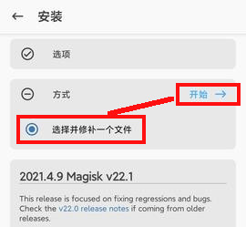

小米9pro5G-crux刷机
下载
- TWRP-3.3.1
- ROM
总结
2021-11-22
可以使用magisk root了
2021-11-16
线刷的稳定版 crux_images_V12.5.1.0.RFXCNXM_20210612.0000.00_11.0_cn
可以临时刷入 TWRP，下次启动又被它改回自己的bootloader。使用u盘，刷入的开发版（miui_CRUX_21.10.28_351313c2b1_11.0.zip）
即使刷了开发版也没办法root，必须登录小米账号，联网验证，向它申请。
使用 TWRP 刷入 magisk，手机不断重启无法进入系统。
常用技巧
进入 recovery & FASTBOOT 模式
-
fastboot
关机状态下同时按住：【音量下】和【电源键】 -
recovery
关机状态下同时按住：【音量上】和【电源键】1 2
fastboot devices fastboot oem device-info
卡刷、线刷
卡刷、线刷 和其他小米手机一样
magisk root
- 解bootloader锁
- 下载准备
- 小米9pro5G 全量卡刷包： miui_CRUX_V12.5.3.0.RFXCNXM_190e6aea41_11.0.zip
- MagiskManager-v8.0.7.apk
- 解压
miui_CRUX_V12.5.3.0.RFXCNXM_190e6aea41_11.0.zip，将解压出的boot.img文件拷贝到目标手机的Download文件夹 - 安装
MagiskManager-v8.0.7.apk - 启动 MagiskManager，点击“安装”
 - 不勾选
安装到Recovery，点击“下一步”
 - 选择“选择并修补一个文件”，点击“开始”，选中刚拷贝进来的
boot.img
 - 打完补丁，生成一个新的img文件，例如， magisk_patched-22100_SNj97.img
- 手机重启进入bootloader模式，执行：
fastboot flash boot magisk_patched-22100_SNj97.img - 重启手机就能进入系统，magisk正常使用。